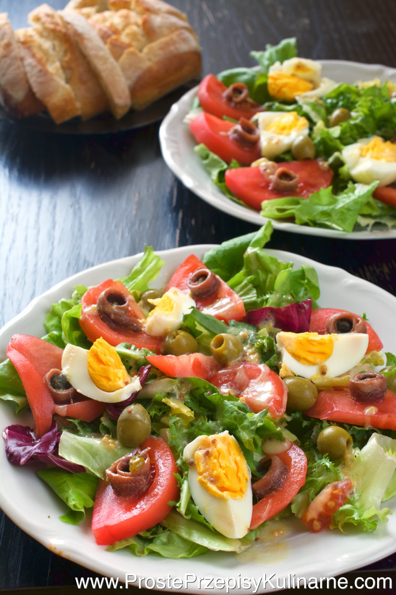
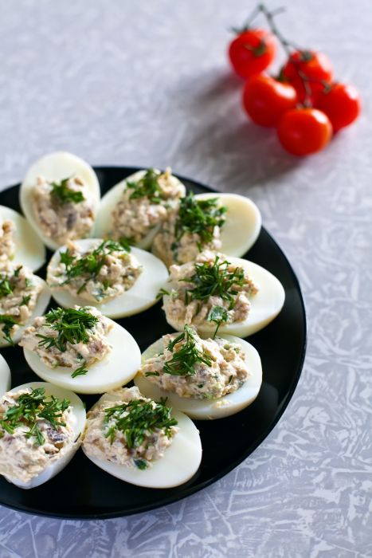

Proste przepisy na dania i przekąski | Przepisy.pl
 Przepisy Przepisy Przepisy influencerów Dania i przekąski Ciasta LODY I NAPOJE SKŁADNIKI Wege Diety OKAZJE POSIŁEK NA SKRÓTY POPULARNE KUCHNIE ŚWIATA SPOSÓB PRZYGOTOWANIA BLOG Przepisy MAGAZYN PORADY KULINARNE ŚWIAT PRZYPRAW VIDEOPORADY Zdrowe odżywianie Społeczność Newsletter Co masz w lodówce Logowanie Rejestracja Pobierz ebook Książka kulinarna Logowanie Rejestracja Pobierz ebook Książka kulinarna Przepisy.pl Na skróty Prosty przepis
Przepisy na Prosty przepis
7946 przepisów
Proste przepisy na ciasta
Prosty przepis na sos
Prosty przepis pozostałe
Prosty przepis z kurczakiem
Prosty przepis z makaronem
Prosty przepis z mięsem
Filtrowanie i sortowanie Filtrowanie: Sortowanie:Filtrowanie: wyczyść filtry
okazje wyklucz wegetariańskie mięsne videoSortowanie:
nowe popularne szybkie ZASTOSUJ 1 . . . 2 3 4 . . . 249Przepisy (7946)
Magiczne ciasto3357
łatwe
46 min. Hokus-pokus, czary-mary… Wbrew pozorom do zrobienia magicznego ciasta nie będziecie potrzebowali... Pieczeń ze schabu w glazurze z dżemu morelowego z cebulą i j...1575
łatwe
120 min. Jeśli szukasz dania na specjalne okazje, koniecznie wypróbuj przepis na pieczeń ze schabu z dżeme... Ekspresowe ciasto858
łatwe
10 min. Są takie dni w życiu każdego kucharza, kiedy trzeba działać błyskawicznie. Okazało się, że podcza... Naleśniki z kurczakiem w sosie bolognese713
łatwe
30 min. Delikatne naleśniki wypełnione kurczakiem z aromatycznym, gęstym sosem Bolognese smakują wyśmieni... Sznycelki drobiowe po francusku1177
łatwe
30 min. Jeśli masz ochotę przygotować na obiad coś, czego twoi bliscy nie mieli jeszcze do tej pory na ta... Kalafior zapiekany z mięsem mielonym - VIDEO718
łatwe
45 min. Zapiekanki z mięsem mielonym w roli głównej to dania treściwe, szybkie w przygotowaniu, a co nie... Ciasto na słodkie naleśniki500
łatwe
20 min. Naleśniki na słodko są idealnym pomysłem na deser, jeśli Twoja miłość do słodyczy nie zna granic... Roladki z szynki615
łatwe
90 min. Apetyczne roladki z szynki, wypełnione kremowym, serowym nadzieniem, to prawdziwa poezja smaku. M... Sernik wiedeński z borówkami401
łatwe
70 min. Co wyróżnia sernik wiedeński z borówkami na tle innych tego rodzaju ciast? Nie posiada kruchego s... Sałatka Szefa371
łatwe
15 min. Masz pod ręką świeże warzywa? Zainspiruj się i przyrządź smaczną sałatkę. Sięgnij przede wszystki... Makaron w sosie pieczarkowym389
łatwe
20 min. Szacowana cena przygotowania dania: do 20 zł. Ceny zostały oszacowane na podstawie orientacyjnych... Ziemniaczana zapiekanka z kurczakiem442
łatwe
60 min. Nie trzeba stać przy garach pół dnia, żeby przygotować coś pysznego i oryginalnego. Tak właśnie j... Kotlety mielone z pieczarkami i żółtym serem351
łatwe
30 min. Kotlety mielone to sprawdzone i bardzo popularne danie obiadowe, które stało się już klasykiem ku... Delikatne śledzie pod pierzynką z majonezu - VIDEO687
łatwe
15 min. Śledzie pod pierzynką z majonezu to popularne i powszechnie lubiane danie, które w prosty sposób... Kolorowa sałatka warzywna z wędzonym kurczakiem - VIDEO415
łatwe
20 min. Kolorowa sałatka warzywna z wędzonym kurczakiem to doskonała propozycja na uroczystą kolację czy... Kartacze346
trudne
60 min. Kartacz, zwany także cepelinem, to potrawa popularna zwłaszcza we wschodniej Polsce. Często mówi... Sałatka z szynką i ogórkiem - VIDEO392
łatwe
30 min. Połączenie sera oraz szynki występuje często w wielu daniach, np. w tostach, kanapkach, na pizzy... Murzynek430
łatwe
60 min. Na wystawach licznych cukierni i kawiarnianych ladach wzrok przyciągają różnorodne wersje brownie... Zapiekane naleśniki po bolońsku324
łatwe
45 min. Tradycyjne naleśniki możesz urozmaicić decydując się na ich zapiekaną wersję. Do tego przepisu po... Proste ciastka387
łatwe
20 min. Przepis na proste ciasteczka zawsze warto mieć pod ręką. Ochota na coś słodkiego może pojawić się... Zapiekanka z cukinii z makaronem - VIDEO229
łatwe
45 min. Szacowana cena przygotowania dania: do 20 zł. Ceny zostały oszacowane na podstawie orientacyjnych... Duszony kurczak z warzywami238
łatwe
30 min. Szacowana cena przygotowania dania: do 15 zł. Ceny zostały oszacowane na podstawie orientacyjnych... Cordon Bleu - Kotlet szwajcarski332
łatwe
50 min. Kotlet z niespodzianką! Zachwyca nie tylko soczystym mięsem, ale też ukrytymi pod panierką wyrazi... Brownie z kaszy jaglanej224
łatwe
35 min. Kasza jaglana jeszcze do niedawna kojarzona była raczej z potrawami wytrawnymi, przygotowywanymi... Muffinki a la pizza - VIDEO215
łatwe
90 min. Muffinki to bardzo popularne wypieki. Nic w tym dziwnego – są bardzo proste w przygotowaniu, a do... Sałatka gyros312
łatwe
45 min. Kulinarny hit ostatnich lat – sałatka gyros – to połączenie pikantnego mięsa z kurczaka ze świeżą... Schab z pieczarkami pod pierzynką z majonezu i żółtego sera330
łatwe
40 min. Schab z pieczarkami pod pierzynką z majonezu i żółtego sera to dobra alternatywa dla jego klasycz... Smażony makaron235
łatwe
30 min. Smażony makaron to prosta i smaczna propozycja na danie obiadowe lub szybką ciepłą kolację. Do je... Kurczak ze szpinakiem219
łatwe
30 min. Delikatny i soczysty filet z kurczaka wyśmienicie smakuje ze szpinakiem i startym na grubej tarce... Sałatka z brokułów i kalafiora237
łatwe
30 min. Wiosna przez cały rok na talerzu? Tak! Sałatka z brokułem i kalafiorem przypomni wam o słonecznyc... Ziemniaki faszerowane po chłopsku320
łatwe
60 min. Ziemniaki i śledzie to duet, który doskonale ze sobą współgra. Kto z nas nie zna sałatki śledziow... Serowa zapiekanka z brokułami173
łatwe
45 min. Błyskawiczna zapiekanka z makaronem, brokułami i mielonym mięsem, polana kremowym sosem. Charakte... 1 . . . 2 3 4 . . . 249Ciekawostki i porady
Jak długo gotuje się grzyby?Pytanie o to, jak długo gotować grzyby, pojawia się na wielu forach internetowych. Czas więc na rozwianie wszelkich wątpliwości.
Czytaj więcej Kalafior - co z niego zrobić?Czy to kalafior? Czy to brokuł? Romanesco jest uznawany za wynik flirtu obu tych warzyw. Czas na kulinarne amory! W końcu Rzym, z którego pochodzi, to idealna sceneria, by się zakochać.
Czytaj więcej Dania z cebuli na każdą okazję 9 sposobów na kapustę Dobrze nadziane. 7 sprawdzonych rad, jak faszerować mięso Placki i placuszkiNewsletter
Codziennie nowe inspiracje
Odbiorcy newslettera przyrządzili już ponad 260 000 potraw!
Prosty przepis
Nie wszystkie dania wymagają skomplikowanej obróbki, zastosowania wyszukanych produktów czy spędzenia wielu godzin w kuchni. Proste przepisy są często najlepsze i stanowią ratunek dla zabieganych osób. Kiedy zatem nie masz czasu, możesz przygotować zapiekankę mięsną lub warzywną, filet z kurczaka, rozmaite sałatki, makarony lub ryby. Co ważne, użycie kilku prostych oraz łatwo dostępnych składników nie oznacza rezygnacji z bogactwa smaków i aromatów. Należy jednak zwrócić uwagę na jakość wybieranych produktów – owoce i warzywa powinny być świeże, a mięso musi pochodzić ze znanego źródła. Szukasz konkretnego przepisu na smaczne, ale proste danie? W takim razie przygotuj złocistą frittatę z cukinią i pomidorami. Na rozgrzaną patelnię wlej masę, którą wykonasz na bazie jajek i jogurtu, a następnie dodaj pokrojone warzywa – pomidory i cukinie. Patelnię wstaw do piekarnika i zapiekaj potrawę przez około 5 minut. Gotowe danie serwuj posypane grubo pokrojonym szczypiorkiem (zamiast niego możesz użyć listków świeżej bazylii, najlepiej porwać je na małe kawałki i dodać do masy tuż przed zapieczeniem). W roli przekąski idealnie sprawdzą się natomiast śledzie z rodzynkami, orzechami i granatem. Wystarczy wymieszać pokrojone ryby wraz z majonezem (aby zaostrzyć jego smak dodaj do niego łyżeczkę musztardy Dijon). Całość posyp orzechami i owocami granatu. Śledzie najlepiej podawaj schłodzone. Możesz także przygotować opiekane kukurydze. Dodaj do nich różne przyprawy i dodatki, takie jak: kumin rzymski, przyprawa do pikantnego kurczaka, otarta skórka limonki, pokruszone płatki kukurydzy oraz starty ser. Nie zapomnij także o soczystych udkach pieczonych, chrupiących kotletach z kurczaka w płatkach kukurydzianych z ziemniakami, cebulą i boczkiem, plackach warzywnych z cukinią i marchwią w sosie ziołowo-śmietanowym, muffinkach à la pizza czy jajkach faszerowanych awokado. Pamiętaj, że proste dania często są najlepsze. Przekonaj się o tym sam, wypróbowując kilka naszych sprawdzonych przepisów! Życzymy smacznego.
kontakt regulamin Polityka prywatności Polityka plików cookie Mapa witryny Ustawienia plików cookie